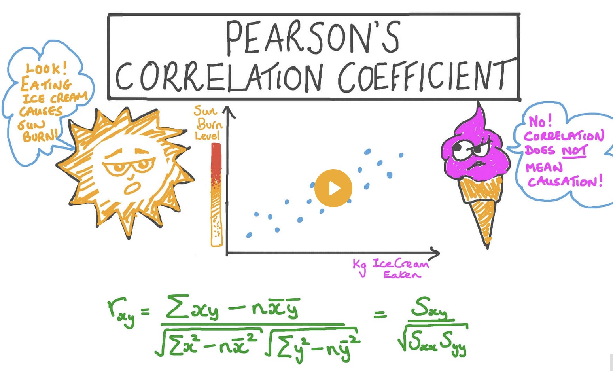
4 Corrélation
- Mise en place : Télécharger le dossier exo4 et décompressez le sur votre ordinateur. Puis ouvrez le projet R
exo4.Rprojdans Rstudio.
4.1 Préparation des données
4.1.1 Chargement du tableau principal
On charge notre bon vieux fichier des pays européens en 1988
don<-read.table(file = "resources/data/europe88/euro1988.csv",
sep = ";",
header = T)
don$BLOC<-as.factor(don$BLOC)
levels(don$BLOC)<-c("Capitaliste","Socialiste")
head(don)
#> PAYS BLOC PNB TMI ESP URB NAT MOR FEC JEU VIE SUP POP X
#> 1 ALB Socialiste 600 43.0 71 34 27 6 3.3 35 5 29 3.1 4825115
#> 2 AUT Capitaliste 10000 10.3 75 55 12 12 1.4 18 14 84 7.6 4299715
#> 3 BEL Capitaliste 9200 9.7 75 95 12 11 1.5 19 14 31 9.9 3636312
#> 4 BGR Socialiste 2000 14.5 72 65 13 11 2.0 21 11 111 9.0 5206070
#> 5 CHE Capitaliste 17800 6.8 77 61 12 9 1.5 17 14 41 6.6 3869378
#> 6 CSK Socialiste 3200 13.9 71 74 14 12 2.0 24 11 128 15.6 4487005
#> Y
#> 1 1684833
#> 2 2335579
#> 3 2667243
#> 4 1930219
#> 5 2243130
#> 6 25402814.1.2 Choix des deux variables à analyser
En dehors de BLOC et PAYS, on ne garde que deux variables que l’on renomme X et Y avec colnames() et que l’on convertit en type numérique général. Il suffira par la suite de modifier le choix des variables X et Y pour faire d’autres analyses.
eur<-don[,c("PAYS","BLOC","URB","TMI")]
colnames(eur)<-c("PAYS","BLOC","X","Y")
eur$X<-as.numeric(eur$X)
eur$Y<-as.numeric(eur$Y)
head(eur)
#> PAYS BLOC X Y
#> 1 ALB Socialiste 34 43.0
#> 2 AUT Capitaliste 55 10.3
#> 3 BEL Capitaliste 95 9.7
#> 4 BGR Socialiste 65 14.5
#> 5 CHE Capitaliste 61 6.8
#> 6 CSK Socialiste 74 13.94.1.3 On est malin …
Mais comme on ne sait plus ce que sont X et Y, on le précise avec des chaînes de caractères qu’on pourra utiliser dans les graphiques. Et on peut préparer une version multilangue …
# Pour la version française
fr_titre <- "Les pays européens en 1988"
fr_nomX <- "Taux d'urbanisation en %"
fr_nomY <- "Taux de mortalité infantile en p. 1000"
fr_auteur <- "Claude Grasland, Université Paris Diderot, 2020"# Pour la version arabe
ar_titre <- "البلدان الأوروبية في عام 1988"
ar_nomX <- "معدل التحضر في المائة"
ar_nomY <- "معدل وفيات الرضع في عام 1000"
ar_auteur <- "كلود غراسلاند، جامعة باريس ديدرو، 2020"# Pour la version anglaise
en_titre <- "European countries in 1988"
en_nomX <- "Urbanisation rate %"
en_nomY <- "Infant mortality rate p. 1000"
en_auteur <- "Claude Grasland, University Paris Diderot, 2020"# Pour la version russe
ru_titre <- "Европейские страны в 1988 году"
ru_nomX <- "Уровень урбанизации в %"
ru_nomY <- "Коэффициент младенческой смертности в 1000 году"
ru_auteur <- "Клод Грассленд, Парижский университет Дидро, 2020"4.1.4 On est paresseux …
Comme on prévoit qu’il y aura des différences entre pays socialistes et capitalistes, on crée deux sous-tableaux
eur_soc<-eur[eur$BLOC=="Socialiste",]
eur_cap<-eur[eur$BLOC=="Capitaliste",]4.2 Exploration visuelle
4.2.1 Visualisation avec plot(X,Y)
La manière la plus simple d’analyser la relation entre X et Y est d’utiliser un simple plot
plot(eur$X,eur$Y)
La fonction plot() comporte de nombreux paramètres permettant d’améliorer le graphique et de l’habiller. Voici un exemple d’habillage en français
plot(eur$X,eur$Y,
main = fr_titre, # titre
cex.main = 1, # police du titre
sub = fr_auteur, # sous-titre
cex.sub = 0.6, # police du sous-titre
xlab = fr_nomX, # nom de l'axe X
xlim = c(20,100), # intervalle de l'axe X
ylab = fr_nomY, # nom de l'axe Y
ylim = c(0,50), # intervalle de l'axe Y
cex.axis = 0.8, # police des gradations d'axes
cex.lab = 0.8, # police des noms d'axes
cex = 0.6, # taille des symboles
col = "blue") # couleur des symboles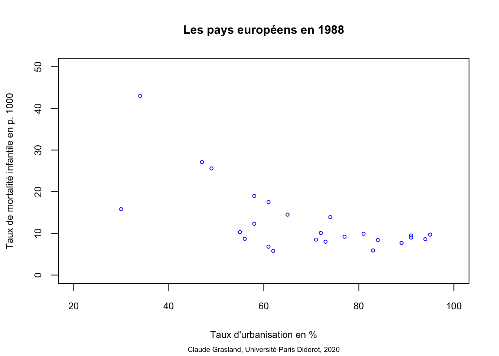
Ou en anglais: il suffit de changer le nom des variables relatives aux titres.
plot(eur$X,eur$Y,
main = en_titre, # titre
cex.main = 1, # police du titre
sub = en_auteur, # sous-titre
cex.sub = 0.5, # police du sous-titre
xlab = en_nomX, # nom de l'axe X
xlim = c(20,100), # intervalle de l'axe X
ylab = en_nomY, # nom de l'axe Y
ylim = c(0,50), # intervalle de l'axe Y
cex.axis = 0.7, # police des gradations d'axes
cex.lab = 0.7, # police des noms d'axes
cex = 0.6, # taille des symboles
col = "blue") # couleur des symboles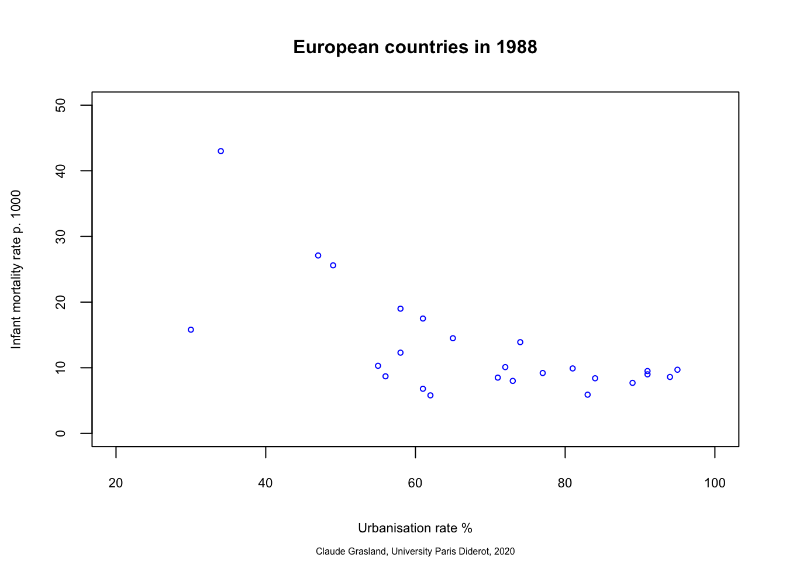
4.2.2 Identification des points avec cor + text(…)
On peut ajouter au graphique généré par plot(X,Y) une couche de labels avec text(X,Y,Code). On précise la position avec pos =, la taille de police avex cex = et la couleur avec col =.
plot(x = eur$X,
y = eur$Y,
cex=0.5,
col= "blue",
ylim =c(0,50))
text(x = eur$X,
y = eur$Y,
label = eur$PAYS,
cex = 0.7,
pos=3,
col = "blue")
4.2.3 Ajout de lignes horizontales ou verticales avec cor() + abline(…)
On peut rajouter à un graphique des lignes horizontales ou verticales avec abline en précisant leur position avec h= ou v=, leur épaisseur avec lwd = , leur style avec lty= et leur couleur avec col=
plot(eur$X,eur$Y,
main = fr_titre, # titre
cex.main = 1, # police du titre
sub = fr_auteur, # sous-titre
cex.sub = 0.6, # police du sous-titre
xlab = fr_nomX, # nom de l'axe X
xlim = c(20,100), # intervalle de l'axe X
ylab = fr_nomY, # nom de l'axe Y
ylim = c(0,50), # intervalle de l'axe Y
cex.axis = 0.8, # police des gradations d'axes
cex.lab = 0.8, # police des noms d'axes
cex = 0.6, # taille des symboles
col = "blue") # couleur des symboles
# Ajout d'une ligne horizontale correspondant à la moyenne de Y
abline(h=mean(eur$Y),col="red",lwd = 1, lty = 2)
# Ajout d'une ligne verticlae correspondant à la moyenne de X
abline(v=mean(eur$X),col="red",lwd = 1, lty = 2)
text(x = eur$X,
y = eur$Y,
label = eur$PAYS,
cex = 0.6,
pos=3,
col = "blue")
La fonction abline() peut servir aussi à tracer la droite de régression Y=aX+b produite par la fonction lm()
plot(eur$X,eur$Y)
maregression = lm(eur$Y~eur$X)
abline(maregression,col="red")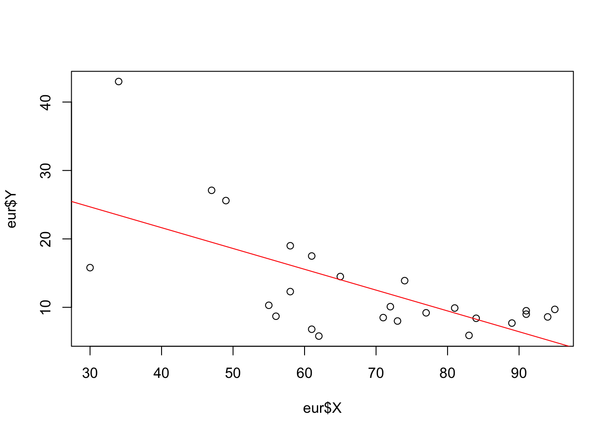
4.2.4 Au delà de R-Base …
Il existe des packages spécialisés permettant de faire des graphiques plus sophistiqués. Mais on les apprendra ultérieuement. Juste un exemple :
library(car)
scatterplot(eur$X,eur$Y)
4.3 Coefficients de corrélation
4.3.1 Définition
4.3.1.1 Relation linéaire/monotone/complexe
il existe une relation linéaire entre deux variables quantitatives X et Y si l’on peut prédire leurs valeurs respectives par les fonctions Y = a1.X + b1 et X = a2.X = b2
il existe une relation monotone entre deux variables quantitatives X et Y si l’on peut prédire les valeurs Y en fonction de celle de X far une fonction Y=f(X) qui est strictement croissante ou strictement décroissante.
il existe une relation complexe entre deux variables quantitatives X et Y si l’on peut prédire les valeurs Y en fonction de celle de X par une fonction Y=f(X) qui comporte au moins un point minimum ou maximum de changement de pente (annulation de la dérivée première)

4.3.1.2 Relation positive/négative/nulle
Une relation linéaire ou monotone est positive si à un accroissement de X correspond un accroissement de Y
Une relation linéaire ou monotone est négative si à un accroissement de X correspond une diminution de Y
une relation est nulle si une variation de X n’entraine pas de variation de Y
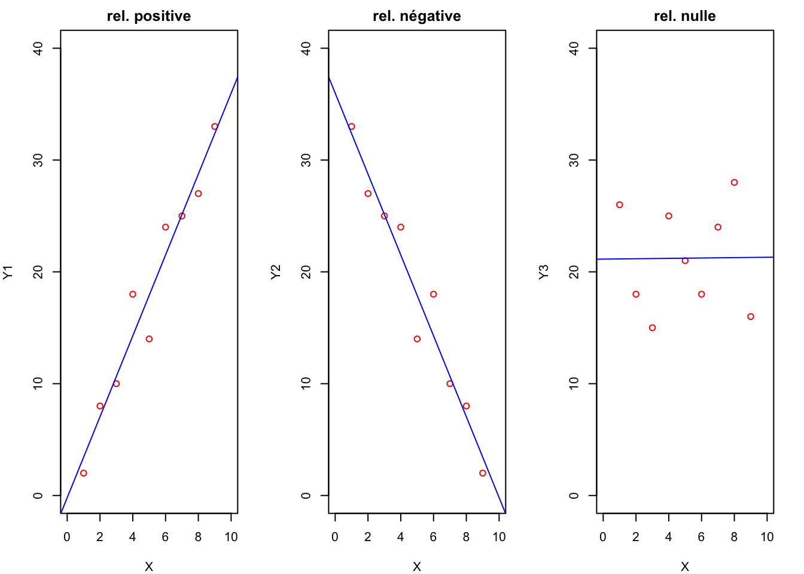
4.3.1.3 Relation forte/faible/nulle
Une relation linéaire est forte si une valeur de X permet de prédire la valeur de Y avec une faible marge d’erreur.
Une relation linéaire ou monotone est faible si une valeur de X permet de prédire la valeur de Y avec une forte marge d’erreur.
une relation linéaire est nulle si une valeur de X ne permet aucunement de prédire la valeur de Y
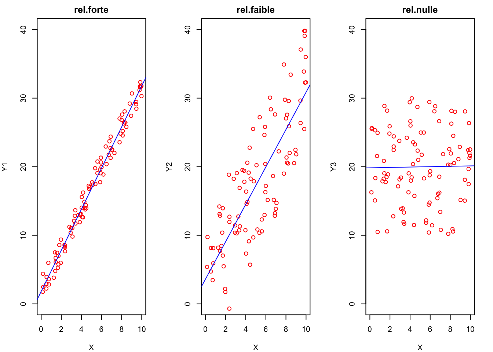
4.3.1.4 Relation significative/non siginificative
Une relation linéaire est significative si l’effectif permettant de la mettre en évidence est suffisamment grand pour qu’on puisse exclure qu’elle soit l’effet du hasard.
Une relation linéaire ou monotone est non significative si l’effectif permettant de la mettre en évidence n’est pas suffisamment grand pour qu’on puisse exclure qu’elle soit l’effet du hasard.
On considère traditionnellement qu’une relation est significative s’il y a moins de 5% de chances qu’elle soit l’effet du hasard (p-value < 0.05).
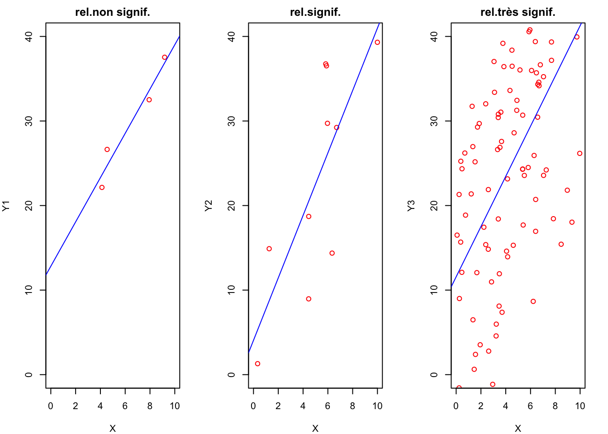
4.3.2 La fonction cor()
La fonction cor() permet de mesurer le coefficient de corrélation de deux variable X et Y.
Elle permet de détecter les relations linéaires en choisissant le paramètre (par défaut) method = pearson
Elle permet de détecter les relations non linéaires en choisissant le paramètre method = spearman qui mesure l’existence d’une relation monotone entre les rangs de X et Y
La syntaxe de la fonction cor() est très simple et permet de calculer trois types de corrélation. La méthode par défaut est pearson c’est-à-dire le coefficient de corrélation linéaire
cor(eur$X,eur$Y)
#> [1] -0.6547219
cor(eur$X,eur$Y, method = "spearman")
#> [1] -0.5699443
cor(eur$X,eur$Y, method = "kendall")
#> [1] -0.4053653cor() permet de savoir si la relation est linéaire ou monotone

cor() permet de repérer l’effet d’une valeur exceptionnelle
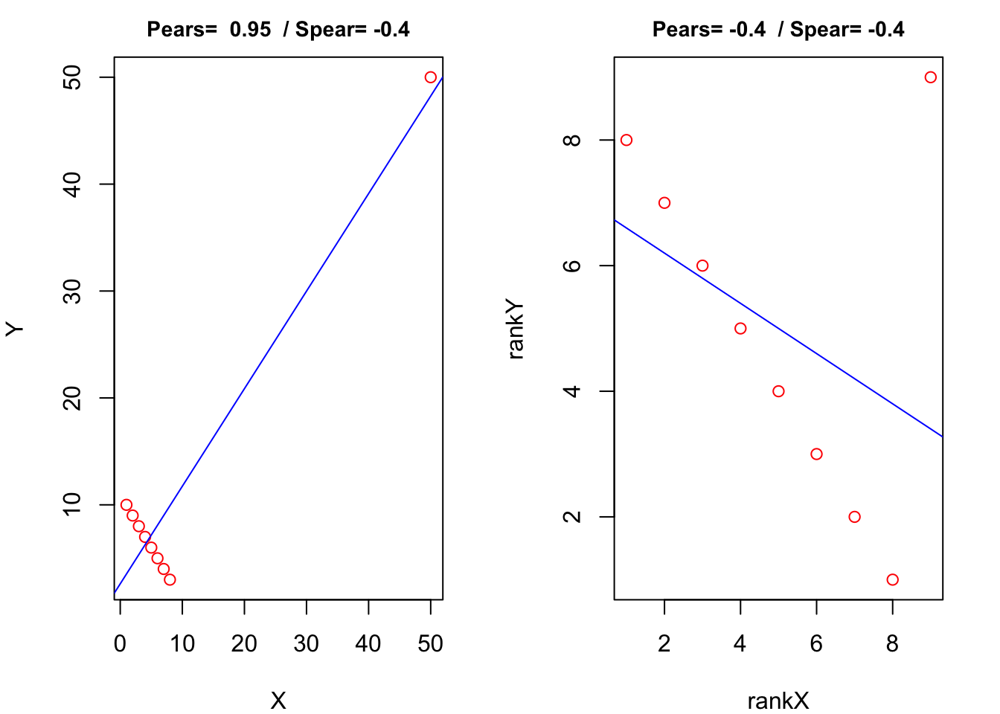
cor() permet de savoir si la relation est positive ou négative

cor() permet de avoir si la relation est forte ou faible
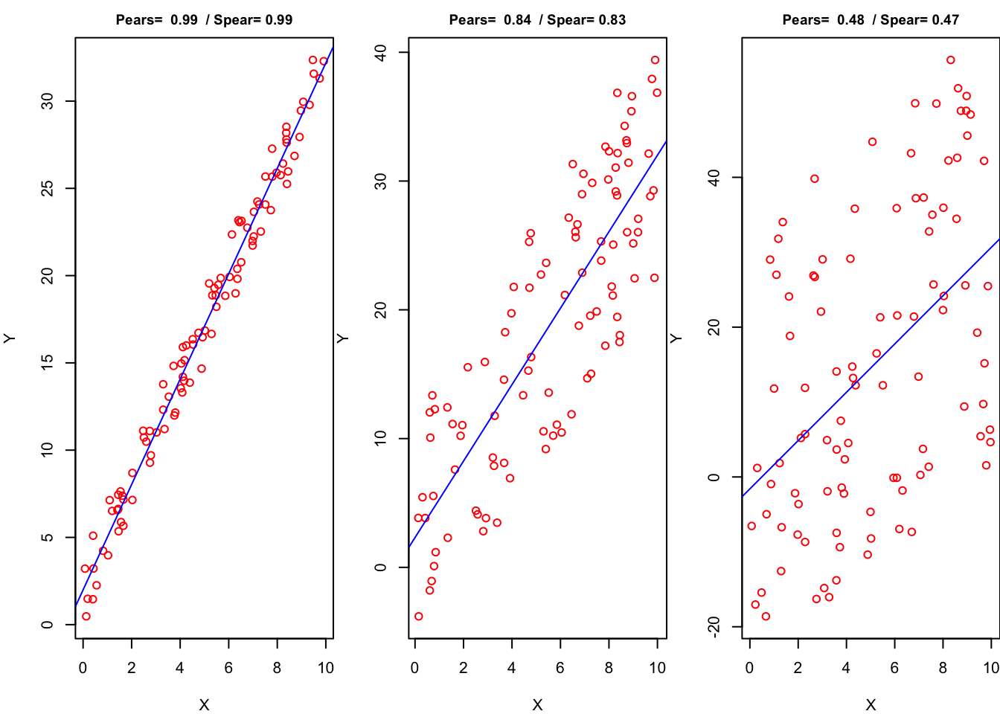
4.3.3 La fonction cor.test()
la fonction cor() permet de savoir si une relation est forte ou faible, positive ou négative, linéaire ou non linéaire. Mais cor() ne permet pas de savoir si une relation est significative ou pas.
C’est la fonction cor.test() qui permet de tester la significativité d’une relation en fournissant un intervalle de confiance du coefficient de corrélation et une probabilité de rejet de H0 : il n’y a pas de relation appelée en anglais la p-value.
p-value > 0.10 : relation non significative
0.10 > p-value > 0.05 : relation presque significative
p-value < 0.05 : relation significative
p-value < 0.01 : relation très significative
Même syntaxe que cor() :
cor.test(eur$Y,eur$X)
#>
#> Pearson's product-moment correlation
#>
#> data: eur$Y and eur$X
#> t = -4.1541, df = 23, p-value = 0.0003835
#> alternative hypothesis: true correlation is not equal to 0
#> 95 percent confidence interval:
#> -0.8340765 -0.3501838
#> sample estimates:
#> cor
#> -0.6547219
cor.test(eur$Y,eur$X, method="spearman")
#> Warning in cor.test.default(eur$Y, eur$X, method = "spearman"): Cannot compute
#> exact p-value with ties
#>
#> Spearman's rank correlation rho
#>
#> data: eur$Y and eur$X
#> S = 4081.9, p-value = 0.002936
#> alternative hypothesis: true rho is not equal to 0
#> sample estimates:
#> rho
#> -0.56994434.3.4 En résumé : intensité ou significativité ?
Le carré du coefficient de corrélation appelé r-square ou r2 permet de mesurer le pouvoir explicatif de X par rapport à Y. Il ne dépend pas du nombre d’observations.
le test de significativité ou p-value mesure la significativité de la relation c’est-à-dire le fait que la relation entre X et Y ne soit pas l’effet du hasard. Il dépend à la fois du niveau de corrélation et du nombre d’observations.
A gauche : une relation forte mais non significative
A droite : une relation faible mais très significative
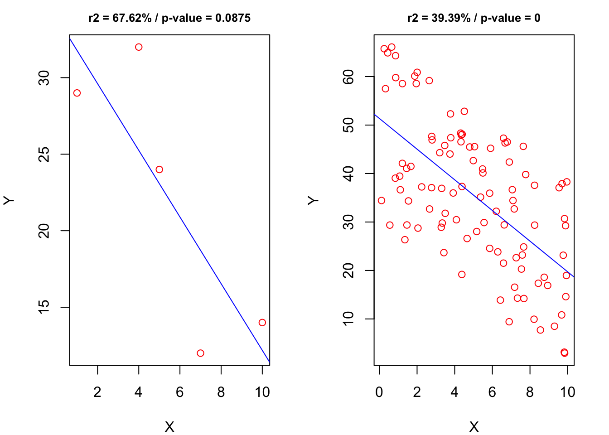
Analysez le diagramme suivant :

Analysez les deux diagrammes suivants :

4.4 Matrice de corrélation
4.4.1 Objectif de l’analyse
Soit un ensemble de variables quantitatives continues \((X_1...X_i...X_k)\) décrivant les mêmes individus.
On se propose de construire la matrice \(R_{ij}[1...i...k ; 1...j...k]\) indiquant pour chaque paire de variable \(ij\) leur coefficient de corrélation (linéaire ou de rang)
Puis de construire la matrice \(p_{ij}[1...i...k ; 1...j...k]\) indiquant pour chaque paire de variable \(ij\) la probabilité H0 d’absence de relation, c’est-à-dire le degré de significativité de la corrélation.
4.4.2 Utilisation des résultats
Mettre en évidence des groupes de variables significativement corrélées entre elles, que ce soit de façon positive ou négative.
Préparer la réalisation d’une analyse en composantes principales qui regroupera les variables corrélées entre elles en facteurs.
Identifier des variables non redondantes pour construire un modèle de régression multiple.
Indentifier des variables fortement corrélées pouvant servir de proxy pour estimer des valeurs manquantes dans un tableau
4.4.3 Visualisation d’une matrice de corrélation
_ Sous la forme de tableaux montrant si possible à la fois les coefficients de corrélation et les seuils de significativité.
Sous la forme de graphes montrant de façon visuelle l’intesité, le signe et la significativité des relations.
Sous la forme de plans factoriels résultant d’une analyse en composantes principales.
Chacun de ces objectifs supposant en général l’emploi de packages spécialisés.
4.4.4 Exemple : création d’un tableau quantitatif
On ne sélectionne que des variables quantitatives et on ajoute les noms des pays en attribut des lignes.
tab<-don[,c("PNB","TMI","ESP","URB","NAT","MOR","FEC")]
row.names(tab)<-don$PAYS
head(tab,3)
#> PNB TMI ESP URB NAT MOR FEC
#> ALB 600 43.0 71 34 27 6 3.3
#> AUT 10000 10.3 75 55 12 12 1.4
#> BEL 9200 9.7 75 95 12 11 1.5On calcule la corrélation
resul<-cor(tab)
str(resul)
#> num [1:7, 1:7] 1 -0.658 0.83 0.508 -0.466 ...
#> - attr(*, "dimnames")=List of 2
#> ..$ : chr [1:7] "PNB" "TMI" "ESP" "URB" ...
#> ..$ : chr [1:7] "PNB" "TMI" "ESP" "URB" ...On affiche la matrice de corrélation en arrondissant les valeurs
round(resul,3)
#> PNB TMI ESP URB NAT MOR FEC
#> PNB 1.000 -0.658 0.830 0.508 -0.466 0.125 -0.614
#> TMI -0.658 1.000 -0.728 -0.655 0.797 -0.414 0.814
#> ESP 0.830 -0.728 1.000 0.583 -0.501 -0.071 -0.619
#> URB 0.508 -0.655 0.583 1.000 -0.514 0.352 -0.554
#> NAT -0.466 0.797 -0.501 -0.514 1.000 -0.482 0.950
#> MOR 0.125 -0.414 -0.071 0.352 -0.482 1.000 -0.426
#> FEC -0.614 0.814 -0.619 -0.554 0.950 -0.426 1.0004.4.5 Utilisation du package psych
La fonction cor.test() de Rbase ne permet pas de calculer les corrélations pour toute une matrice. Aussi on charge le package psych qui dispose d’une fonction corr.test() beaucoup plus puissante qui crée plusieurs matrices de résultats
library(psych)
#>
#> Attaching package: 'psych'
#> The following object is masked from 'package:car':
#>
#> logit
#> The following objects are masked from 'package:ggplot2':
#>
#> %+%, alpha
results<-psych::corr.test(tab)
names(results)
#> [1] "r" "n" "t" "p" "p.adj" "se" "sef" "adjust"
#> [9] "sym" "ci" "ci2" "ci.adj" "stars" "Call"On retrouve la matrice des coefficiences de corrélation
round(results$r,3)
#> PNB TMI ESP URB NAT MOR FEC
#> PNB 1.000 -0.658 0.830 0.508 -0.466 0.125 -0.614
#> TMI -0.658 1.000 -0.728 -0.655 0.797 -0.414 0.814
#> ESP 0.830 -0.728 1.000 0.583 -0.501 -0.071 -0.619
#> URB 0.508 -0.655 0.583 1.000 -0.514 0.352 -0.554
#> NAT -0.466 0.797 -0.501 -0.514 1.000 -0.482 0.950
#> MOR 0.125 -0.414 -0.071 0.352 -0.482 1.000 -0.426
#> FEC -0.614 0.814 -0.619 -0.554 0.950 -0.426 1.000Mais aussi la matrice des tests de significativité
round(results$p,3)
#> PNB TMI ESP URB NAT MOR FEC
#> PNB 0.000 0.006 0.000 0.086 0.114 1.000 0.014
#> TMI 0.000 0.000 0.001 0.006 0.000 0.170 0.000
#> ESP 0.000 0.000 0.000 0.027 0.086 1.000 0.013
#> URB 0.010 0.000 0.002 0.000 0.086 0.254 0.045
#> NAT 0.019 0.000 0.011 0.009 0.000 0.103 0.000
#> MOR 0.552 0.040 0.738 0.085 0.015 0.000 0.170
#> FEC 0.001 0.000 0.001 0.004 0.000 0.034 0.000On peut aussi faire une jolie matrice colorée avec des tests de signficativité sous forme d’étoiles
corPlot(tab, stars=TRUE, diag=FALSE)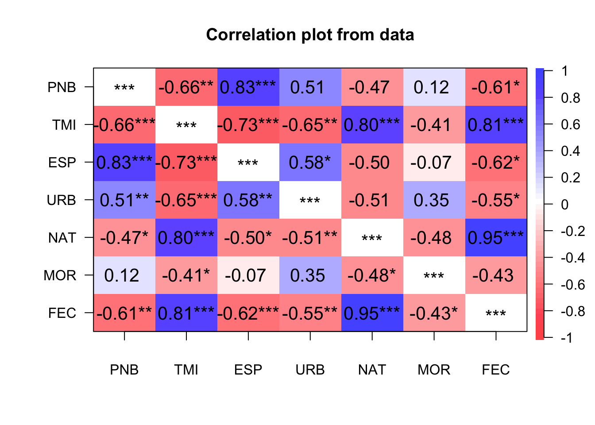
4.4.6 Utilisation du package factoMineR
Si on veut voir les axes factoriels d’une analyse en composante principales on utilise la fonction PCA() de FactoMineR
library(FactoMineR)
monacp<-PCA(tab, graph=FALSE)On pourra ensuite visualiser la corrélation des variables avec les principaux axes factoriels et les coordonnées des individus sur ceux-ci.
4.4.6.1 Corrélation des variables avec les axes factoriels
plot.PCA(monacp,choix = "varcor")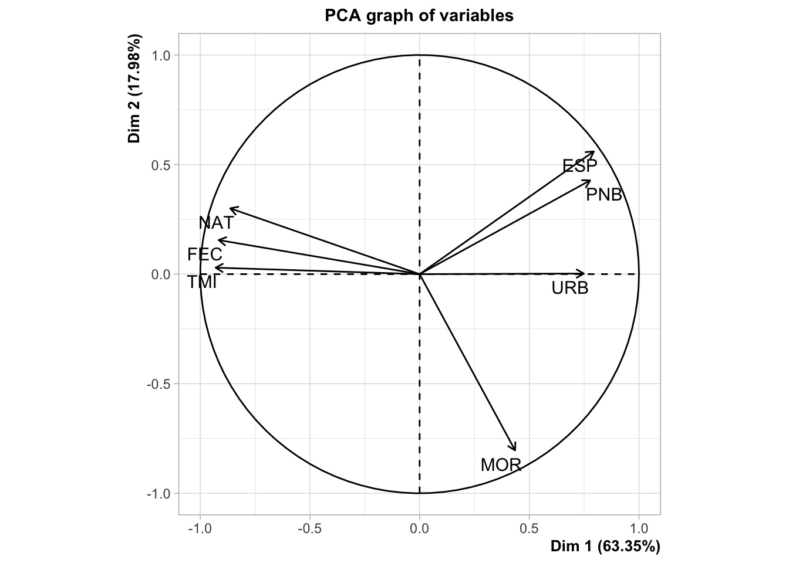
4.4.6.2 Coordonnées des individus sur les axes factoriels
plot.PCA(monacp,choix = "ind",)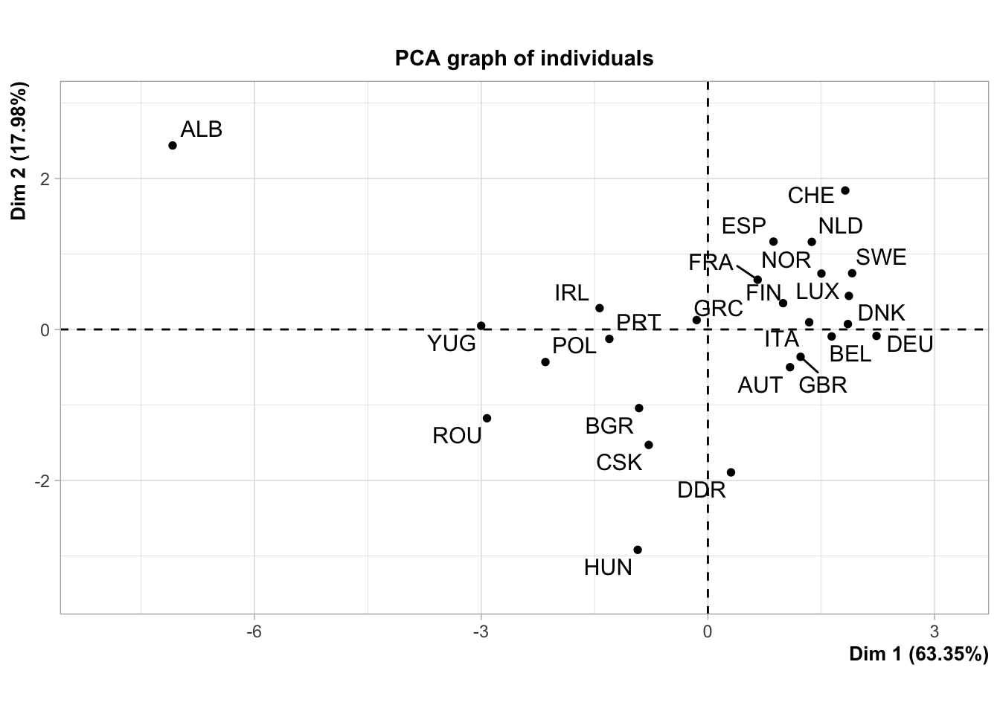